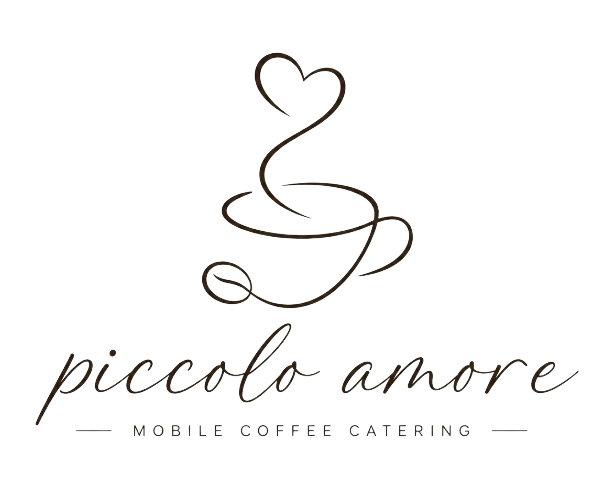

Piccolo Amore

Italienische Espresso-Kultur, mobil serviert.
Anfrage sendenAngebot
Manchmal braucht es nicht viel für ein gutes Fest.
Einen frisch gebrühtem Espresso. Ein cremiger Cappuccino. Ein Glas Prosecco zum Anstossen. Oder ein guter Wein
Was ausgeschenkt wird, entscheiden wir gemeinsam und passend zu deinem Anlass.
piccolo amore ist die perfekte Begleitung für:
- Hochzeiten & Apéros
- Geburtstage & Familienfeste
- Firmenanlässe & Messen
- Märkte & Events
- und eigentlich überall dort, wo Menschen gerne etwas Gutes trinken
Piccolo amore verleiht deiner Feier den italienischen Flair.
Über piccolo amore
Baujahr 1974, Geboren in Italien. Heute unterwegs für gute Drinks, feinen Kaffee und schöne Feste.
Meine Ape Piaggio stammt ursprünglich aus Sardinien und hat dort vermutlich schon einiges erlebt. Heute hat sie ein neues Zuhause auf drei Rädern – als Piccolo Amore, meine mobile Bar mit ganz viel italienischem Charme.
Mit viel Liebe zum Detail wurde aus dem kleinen Klassiker eine einzigartige Bar auf Rädern. Ein bisschen Nostalgie, ein bisschen Dolce Vita und vor allem: gute Getränke und gute Gesellschaft.
Heute ist piccolo amore unterwegs, wo Menschen zusammenkommen: bei Hochzeiten, Geburtstagen, Firmenanlässen, Märkten und besonderen Festen.
Dabei geht es um mehr als guten Kaffee, Prosecco oder einen feinen Aperitivo. Es geht um den Moment, wenn die Ape vorfährt, die ersten neugierigen Blicke kommen und plötzlich ein kleines Stück Italien mitten auf dem Festplatz steht.
Die Geschichte dahinter
Die Idee hinter piccolo amore war eigentlich ganz einfach: Ein Stück italienisches Lebensgefühl zu den Menschen bringen. Nicht nur Kaffee ausschenken. Nicht einfach eine mobile Bar hinstellen. Sondern einen Ort schaffen, an dem man kurz stehen bleibt, miteinander ins Gespräch kommt, anstösst und den Moment geniesst.